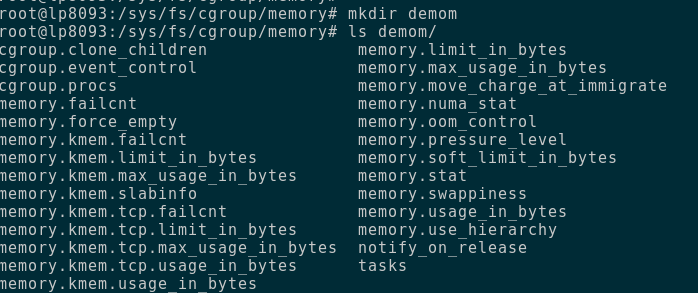
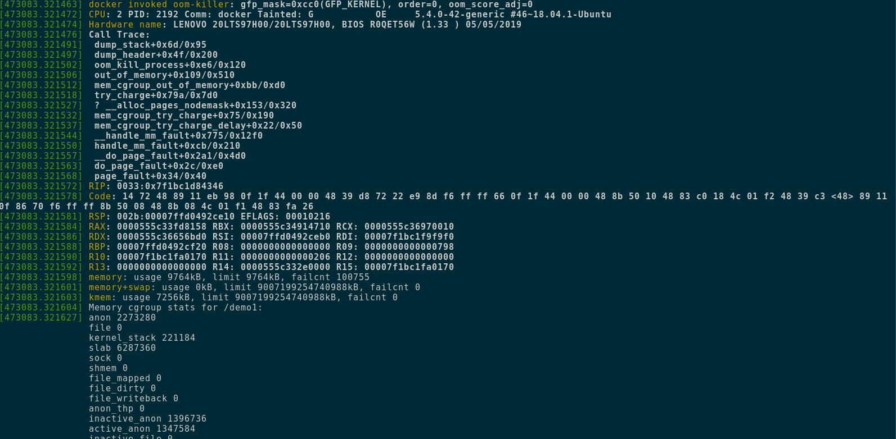
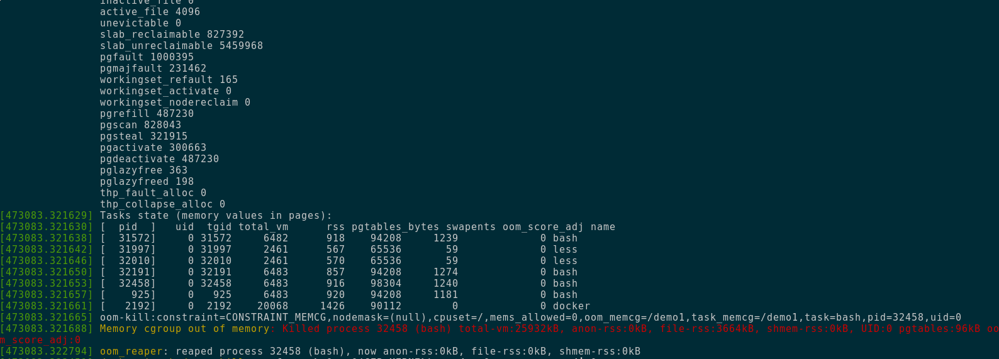
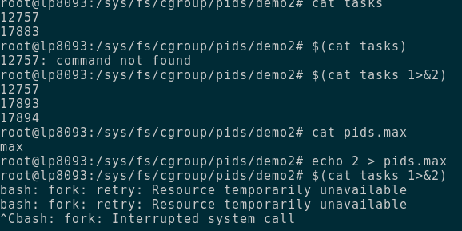

Container¶
A container is a fancy Linux (unix) process.
The fancy-ness of the process comes from the fact that this process
is running in a very isolated environment and a very restricted
environment. This means that the process can not see other
processess and it has very limited access to system resources.
This is essentially a container. It is made up two features of the
Linux Kernel called control groups (or cgroups for short) and
namespaces.
Docker on Mac OS runs the Linux Kernel as a VM so that you can run
containers on top it.
Table of Contents¶
Containers vs VMs¶
A container is a fancy process; a Virtual Machine on the other hand is
an entire virtual computer. It is not difficult to see the
differences from here. In a VM you set up an entirely new OS on top of
virtualied hardware. In a contianer you limit the execution
envrionment of the process. Essentially, a VM is a OS level isolation,
while a contianer is a process level isolation mechanism.
Docker Basics¶
The course at Docker-Curriculum is
highly recommended for beginners.
As a refresher we will look at the common docker commands:
- docker build: build an image from a recipe
- docker run : run an image
- docker stop : stop a running contianer
- docker kill : kill a running container
- docker ps : List running containers
Linux Process-fu¶
This is a brief (albeit incomplete and highly simplified) description
of how processess work in linux; i.e. how they are created, managed
and cleaned-up.
In linux, processess are managed using a tree like structure, with
processess having a parent-child relationship. Processess have a
unique idenfier called the process-id (or pid). The first process that starts
when a Linux computer starts is called the init process and it has
PID 1 and it is responsible for starting/managing all other
processess.
When a process creates a child-process, the parent process gets a
child-pid. This is important because the parent processess need to
wait for the child process to finish its execution. The parent is also
responsible for cleaning up after its children.
Cgroups and Namespaces¶
Container is OS level virutalisation framework that uses namespaces
(provided by the linux kernel) to isolate system resources into
namespaces such that the processess that run in different namespaces
are isolated from each other; i.e. they can not see each other. Thus
they do not step on each others toes.
It also uses cgroups which is a kernel feature that is used to limit
and monitor the usage of system resouces like CPU, memory, pids etc.
So, with these tools, we can isolate process into a sandbox of their
own AND limit them with the amount of CPU/Memory they can use.
Apart from this the filesystem that is used by containers is also
interesting. This file system is implemented as layers and this
enables some really interesting use-cases.
Things are not that simple. There are other things like seccomp
(which is a mechanism that is used to limit the system calls that a
process can use.)
(there are some extra bits as well which I haven't studied yet)
Control Groups¶
Control Groups or cgroups are a kernel feature that lets us allocate
system resource to processes in a very granular way. Using cgroups you
can also do granular resource level accounting for tasks.
You can find the cgroups data-structure at /sys/fs/cgroups The
different directories represent the different subsystem (or
controller) which are used to control various resources.
Cgroups is heirarchical in nature. Which means the child cgroup,
inherits the properties of the parent cgroup. Each directory in one of
these subsystems is a cgroup. There are multiple files is each of
these directories. This is how the kernel exposes the control
variables and accouting information. We will look at 3 of them in
slight detail.
Operations with Control Groups¶
In order to create a new cgroup, we can just create a directory under
the desired controller (we can also use the cgcreate command). Once
you create a directory under any of the cgroups, relevant files for
that cgroup will automatically be created under that directory.
After a process is added to a cgroup, all child processess will be
created in that cgroup itself.
Quick refrence for operations (non exhaustive):
- lscgroup- to view all the cgroups present
- systemd-cgls- to view all cgroups
- cat /proc/cgroups- to show global stats
- cat /proc/pid/cgroups- to show the cgroups for a single process
- cgdelete -g subsystem:groupname- This will delete the control group.
/tasks - This file contains the pids of all the processes in that cgroup- cgexec -g
: - This will run that process (and all child processess) in that cgroup.
Cgroup demo - memory subsystem¶
In this demo we will look at the memory subsystem and do a small
exercise to solidify our understanding of how this works.
The Memory cgroup is used to limit/account the amount of memory that is used by a process.
This is how the cgroup we created under the memory subsystem called demom looks just after creation.

Quick Ref for the cg :
- memory.failcnt : shows how many times the tasks running in the group have reached the max limit
- memory.limit_in_bytes : controls the limit in bytes
- memory.swappiness : control the eagerness with which swapping occurs
- memory.usage_in_bytes : shows accounting of the memory used by all the tasks in the cgroup
- memory.tasks : contains all the pids for all the tasks in this cgroup
- memory.stat : shows all memory related stats for this cgroup
Steps :
- create a new control group under the sys/fs/cgroup/memory directory
- start a bash shell and get its pid by echo $$
- check the cgroups of the shell using cat /proc/$$/cgroup
- put a shell in the cgroup that we created by adding the pid to tasks OR using sudo cgexec -g memory:demo1 bash
- Now, check the cgroups of the shell using cat /proc/$$/cgroup again. it should be different.
- set limit by echo
> memory.limit_in_bytes
if this is smaller than memory.usage_in__bytes then we will get resource busy error
- set echo 0 > memory.swappiness (otherwise things will be sent to swap and OOM wont happen) (do not know why this happens)
- now run something big in here (docker pull works) and it should be killed.
- delete the cg using cgdelete
This is how dmesg looks when an OOM-kill occurs


Look at this Detailed Memory
Reference
for a Deep-Dive.
Cgroup demo - PID subsystem¶
We now do a demo with the pid subsystem to get a better understanding.
This is very helpful as it will protect you case of a fork-bomb.
The PID subsystem is used to limit the number of processess that are running (or can run). We will see it in action soon.
Steps:
- create a new control group under the sys/fs/cgroup/pid directory
- put a shell in there by adding the pid to tasks OR using sudo cgexec -g memory:demo bash
- check pids.max. This should be set to max by default. This controls the number of tasks this cgroup can run (by limiting the no of pids)
- set limit by echo 2 > pids.max [default is /max/]
- Now run $(cat tasks 1>&2) (this creates 3 tasks)
-
It should fail with Resource Temporarily unavailable
The whole demo looks like this.

This is for cgroup v1. There is also cgroup2 which I havent looked at yet!¶
Namespaces¶
Namespaces allow users to isolate the execution environment for a
process. Currently there are 8 namespaces available (which means you
can isolate 8 different resources between your process):
- mount (mnt)
- process id (pid)
- network (net)
- IPC (ipc)
- time
- UTS (hostname)
- cgroup (cgroup)
- User(user)
Pid and Network namspace.¶
- We can create namespces using the unshare command
- Running unshare –fork –pid –net –mount-proc bash will run a bash shell in a different network and pid namespace.
- This means, no internet (unless we manually enable it) and bash is running as pid 1 (how cool is that ?)
The bash process is runnig as pid 1. This is because its running
inside a new PID namespace. The PID namespace provides a set of
processess an new independent set of process-ids.
To fix this we need to add a veth device to the new namespace and
stuff.
TODO: Demo : adding veth devices to namespaces shells and establish communication between them
Reference¶
- Life of a Container - Indradhanush Gupta
- Alice Goldfuss - The Container Operators manual
- Julia Evans - What is even a container
- PWL NYC - Bryan Cantril - Solaris Jails & Zones
- Set Up container namespaces manually, ref 1
- Container Networking, ref 2
- veth man page
- LiveOverfllow video on Docker
- what are containers made from
- Gitbook - Linux Insides - Control Groups
- Detailed Memory CGroup Reference
- Capabilities man page